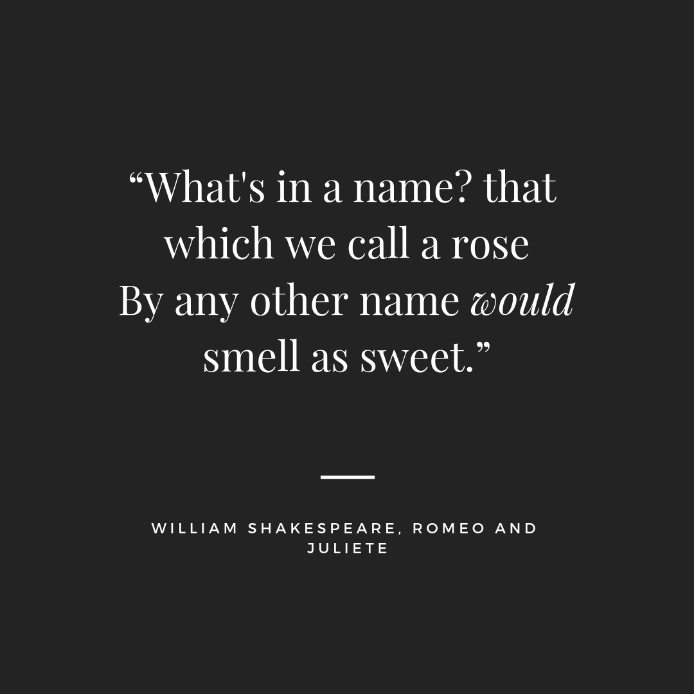

Onawa/On a What?
"What is an Onawa?"
“Where’s it from?”
“What does it mean?”
“Why did your parents do this to you?”
These are some of the questions I encounter on a regular basis. My shallow response - mainly that my parents were hippies - although adequate in the moment, is not a sufficient analysis of the meaning, history, and cultural place of my name. To discover the instances that, together, form the historical and cultural meaning behind a name, I’ve begun to learn more about the origins and use of my name to better understand its position in society and better understand it, myself. I’ve catalogued this journey here.